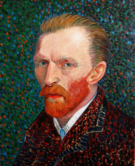

La noche estrellada: el caos y la belleza según Van Gogh
 Pintada en 1889, La noche estrellada es una de las obras más icónicas de Vincent
Pintada en 1889, La noche estrellada es una de las obras más icónicas de Vincent
Van Gogh y una de las más reconocibles de toda la historia del arte.
Con su torbellino de colores y formas, el cuadro representa mucho más que un paisaje nocturno: es una mirada al interior del alma del artista, donde la emoción y la turbulencia se mezclan con una profunda sensibilidad por la naturaleza.
Vincent van Gogh: el pintor de las emociones
Nacido en los Países Bajos en 1853, Van Gogh vivió una vida marcada por la pasión y el sufrimiento. Aunque hoy es considerado un genio, en su tiempo fue prácticamente ignorado, vendiendo solo un cuadro en vida. Su pintura expresaba lo que sentía más que lo que veía: cada pincelada era una extensión de su estado mental. En La noche estrellada, creada durante su estancia en el hospital psiquiátrico de Saint-Rémy-de-Provence, el artista encontró en el cielo nocturno una forma de liberar su angustia y esperanza.
Un cielo que respira movimiento
El elemento más llamativo del cuadro es su cielo vibrante, lleno de espirales, estrellas y un gran remolino luminoso que parece moverse ante nuestros ojos. Van Gogh utilizó pinceladas gruesas y curvas, aplicando el color con energía casi física. Esa técnica, característica de su estilo postimpresionista, transmite una sensación de movimiento y emoción que trasciende lo visual. El contraste entre los azules profundos y los amarillos intensos da vida a un cielo que no solo se ve, sino que se siente.
La aldea y el ciprés: calma y oscuridad
En la parte inferior, una pequeña aldea duerme en silencio bajo el cielo agitado. Las luces cálidas de las casas parecen ofrecer un refugio frente a la inmensidad del universo. A la izquierda, un ciprés oscuro se eleva hacia el cielo, conectando la tierra con el firmamento, como si simbolizara el puente entre lo terrenal y lo espiritual. Esta dualidad entre calma y caos, entre lo humano y lo divino, es una constante en la obra de Van Gogh.
Curiosidades y simbolismo
-Van Gogh pintó esta obra de memoria, no observando directamente el paisaje.
-Se inspiró en las vistas desde la ventana de su habitación en el sanatorio, pero reinterpretadas desde su imaginación.
-La pintura ha sido objeto de estudios científicos que analizan sus patrones como ejemplos de turbulencia en fluidos, algo que la física moderna descubrió siglos después.
-El cuadro refleja la espiritualidad de Van Gogh, quien veía en las estrellas “el infinito donde los hombres van después de la muerte”.
-Actualmente, la obra se encuentra en el Museo de Arte Moderno (MoMA) de Nueva York.
Tormenta de alma y color
La noche estrellada no es solo una pintura, sino una ventana al interior del artista. En cada espiral y en cada destello de luz, Van Gogh dejó una parte de sí mismo, transformando su dolor en belleza eterna. Su visión del cielo nocturno sigue inspirando a artistas, soñadores y amantes del arte de todo el mundo, recordándonos que incluso en la oscuridad más profunda puede brillar la esperanza.